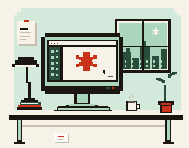

НЕЗАВИСИМЫЙ ДИЗАЙНЕР · PLAYER ONE
[01 / НАЧАЛО]Дизайнс характером.
Создаю сайты, интерфейсы и цифровые штуки, которые хочется рассматривать — и удобно использовать.
Смотреть проекты ПИКСЕЛИ — В ДЕТАЛЯХ.
СМЫСЛ — В ОСНОВЕ.
СМЫСЛ — В ОСНОВЕ.

Веб-дизайн / Интерфейсы / КодНемного ретро. Вполне современно.
02
ИЗБРАННЫЕ ПРОЕКТЫ
Сделано с мыслью.
Самостоятельные концепты. Пространство для идей, поиска и экспериментов.
03 / ЧЕЛОВЕК ЗА ПИКСЕЛЯМИ
Я — PLAYER ONE.
Сначала смысл.
Потом пиксели.
Мне близок дизайн, в котором есть и ясная логика, и что-то личное. Без лишнего шума, но со своим голосом.
Работаю на стыке визуального дизайна и кода: от первого наброска до живого интерфейса.
Чуть больше обо мнеСЛЕДУЮЩИЙ ПРОЕКТ МОЖЕТ БЫТЬ ВАШИМ
Есть идея?
Дадим ей форму.
Расскажите, что задумали.
Начнём с простого разговора.